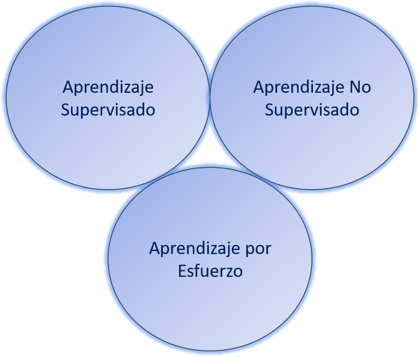
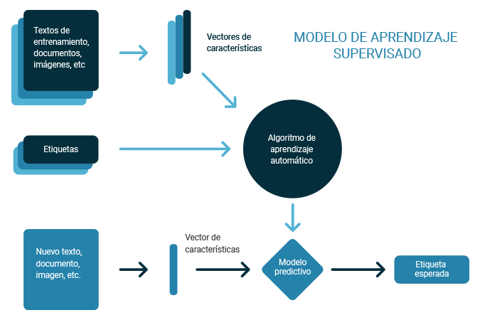
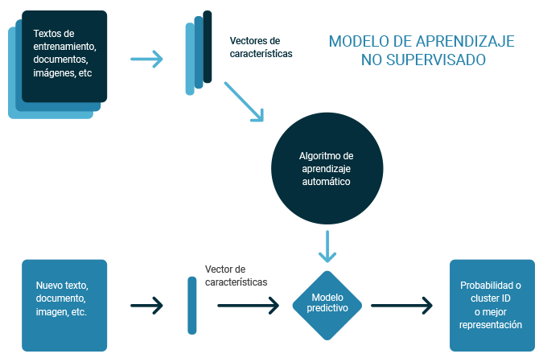
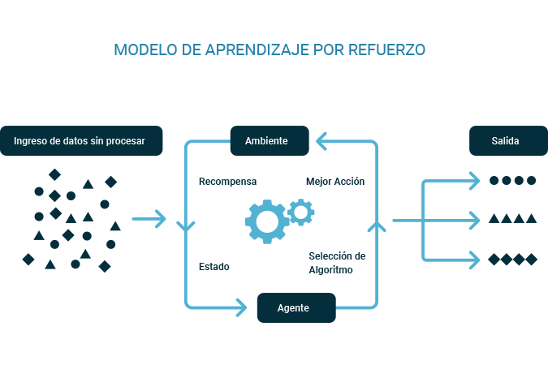

Existen 3 grupos de algoritmos:

Aprendizaje Supervisado
En este tipo de aprendizaje, a la maquina se le enseña con ejemplos. El operador le da al algoritmo datos de entrada, y tambien le proporciona datos de salida deseados. Esto hace que el algoritmo busque por medio de algún método, como llegar a las salidas y entradas deseados que el usuario le proporciona.
Mientras la persona que ingresa los datos al algoritmo, y sabe cuales son las respuestas correctas, el algoritmo busca patrones en los datos, aprende de las observaciones y hace predicciones de estos. Mientras el algoritmo siga realizando estas predicciones y el operador pueda corregirlos, este proceso seguirá hasta que se alcanza un alto nivel de precisión y rendimiento en el algoritmo.

Aprendizaje No Supervisado
Mediante este algoritmo, el algoritmo de aprendizaje automático estudia los datos para encontrar patrones. En este tipo de algoritmo, no existe ninguna respuesta o una persona que este proporcionando ninguna instrucción. Por otro lado, la maquina tiene que sacar por si sola las correlaciones y las relaciones mediante análisis de los datos disponibles
Se dice que es un aprendizaje no supervisado, ya que, se deja que el algoritmo de aprendizaje automático interprete grandes conjuntos de datos y esos datos como consecuencia. Gracias a esto, el algoritmo intentara organizar esos datos para descubrir cual es su estructura. El algoritmo al usar esta técnica organizara los datos en grupos de manera que se puedan ver mas organizados. Mientras mas veces evalúa los datos, su capacidad para tomar decisiones sobre estos mejorará y se volverá más eficiente.

Aprendizaje por Esfuerzo
El aprendizaje por esfuerzo se centra en los procesos de aprendizajes reglamentados, en donde se proporcionan algoritmos de aprendizaje automáticos con un conjunto de acciones, parámetros y valores finales. Ya con las reglas definidas, el algoritmo de aprendizaje automático intenta explorar todas las diferentes opciones y posibilidades, monitoreando y evaluando cada resultado para determinar cuál es el óptimo. En pocas palabras, este sistema ayuda a que la maquina aprenda mediante el proceso de prueba y error. Aprende de experiencias pasadas y comienza a adaptar su enforque en respuesta a la situación para lograr un mejor resultado posible.

Referencia 02